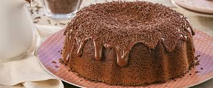

Receita de Bolo
Bolo de chocolate

Ingredientes
- 2 xicaras de farinha de trigo
- 1/2 xicara de chocobo
- 3 colheres de sopa de manteiga
- 3 ovos grandes
- 1 xicara de cha de leite gelado
- 1 xicara de cha de açucar refinado
- 1 colher de sopa de fermento
Como fazer:
- Massa: Bater as claras em neve,reservar. Passar as gemas pela peneira,
Bater as gemas, açúcar é margarina,até obter um creme fofo.
Desligue a batedeira e acrescentar o leite, mexer, acrescentar a farinha é o chocolate,
mexer, bater um pouco para misturar os ingredientes, desligue a batedeira é acrescente
delicadamente o fermento é as claras em neve. Assar a 180 por mais ou menos 35 minutos,
em forma 20 cm. untada é enfarinhada somente no fundo.